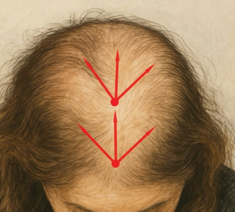
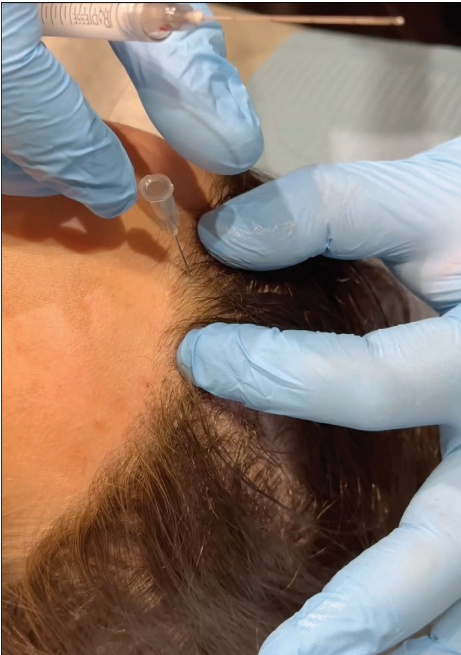
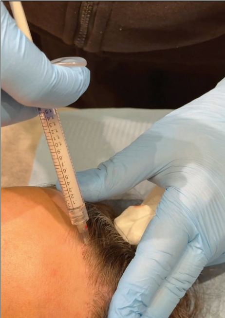

43 脱发：使用CaHA治疗脱发的创新方法：一项初步研究
使用 CaHA 治疗脱发的新方法：一项初步研究
FADI HAMADANI, AINA CERVERA-BAREA, AND JANI VAN LOGHEM
43.1 引言
脱发是美容医学领域普遍关注的问题，雄激素性脱发是最常见的原因。传统疗法包括局部和口服药物，如米诺地尔和非那雄胺，以及血小板富集血浆（PRP）和植发等操作干预。然而，再生疗法正作为有前景的替代方案出现 [1,2]。CaHA 广泛用于面部丰容和皮肤生物刺激，可能为毛发生长提供一种新颖的方法。本章初步探讨了使用高倍稀释 CaHA 作为治疗轻度至中度脱发的临床探索。
尽管 CaHA 主要用于胶原刺激和体积恢复，但其在毛发生长方面的潜力可能归因于：
-
真皮重塑和改善头皮微环境。CaHA 注射可增强细胞外基质支持（ECM），从而优化毛囊功能 [3]。
-
角质形成细胞激活。认为 CaHA 对 ECM 重塑的贡献对角质形成细胞功能具有支持作用，而角质形成细胞是主要的毛发生成细胞类型 [4]。
-
血管生成刺激。增加的血管化可改善毛囊营养并促进毛发生长 [5]。
-
胶原蛋白和弹性蛋白的产生。CaHA 诱导成纤维细胞激活可增强头皮弹性与健康，间接有益于毛囊 [6,7]。
43.2 CaHA 治疗脱发的临床结果
43.2.1 患者选择和纳入标准
目前的方案建议用于患有轻度至中度雄激素性脱发患者。对于男性，其适用范围可达诺伍德-汉密尔顿分型 II 期。对于女性，适用于路德维希分型 I 期（早期进展）。在治疗这些患者时，应考虑是否有自身免疫性脱发疾病史或注射剂禁忌症。
此处描述的方案已应用于 Hamadani 医生的诊所中的患者。其中四名患者仅接受了 CaHA（无辅助疗法），其余患者此前已稳定使用米诺地尔。共有四名患者完成了随访（六个月），并显示出毛发改善。其中，两名仅接受 CaHA 治疗的患者显示出毛发密度增加和头皮质量改善。另外两名接受了 CaHA 和米诺地尔联合治疗的患者，其效果超过了基线米诺地尔反应 [8]。
43.3 风险和并发症管理
尽管在本初步研究中未观察到任何并发症 [8]，但应在咨询过程中告知潜在的风险，包括 CaHA 治疗相关的（非炎症结节、引起填充剂诱导脱发的血管闭塞或延迟性炎症反应）或治疗区域相关的（导致休止期脱发）[9-11]。
休止期脱发（也称为休止期脱落）在本研究接受治疗的任何患者中均未检测到，但它仍然是毛发生长程序中的已知风险 [12,13]。确切机制尚不清楚，但促成因素可能包括头皮操作创伤、对毛囊的应激以及与注射相关的自然毛发周期紊乱 [14]。大量脱发发生在诱因事件后约两到三个月，但由于被认为是暂时性状况，因此有可能重新生发 [15]。
43.4 使用 CaHA 治疗脱发的钝性套管针技术
关于注射点位，参见图 43.1。
43.4.1 分步技术
-
将 CaHA 按 1:1 的比例稀释（1.5 mL CaHA：1.0 mL 生理盐水：0.5 mL 利多卡因）；每次总容量为 3.0 mL。
-
使用肾上腺素化的利多卡因麻醉待植入钝性套管针的区域。
-
使用 25G、50 mm 的钝性套管针，在真皮层创建两个入点：一个位于头皮额部区域，另一个位于头皮中部（图 43.2）。
-
采用扇形方法，进行小剂量、逆行注射，每条线性通道注射 0.05 mL（图 43.3）。
-
多团注技术可确保治疗区域的均匀分布。
-
特别注意在推进套管针时要轻柔，以最大程度地降低休止期脱发（telogen effluvium）的风险 [12,13,16]。
43.5 术后护理
头皮注射 CaHA 后，可能会出现局部红肿或触痛等轻微副作用。这些症状应在几天内消退，但患者应避免触摸、揉搓或按压治疗区域。保持注射部位清洁干燥至关重要，以预防感染或其他并发症。然而，术后 24 小时内应避免使用热水或蒸汽接触治疗区域；此外，至少在术后 48 小时内应避免使用护发产品（如发胶或发蜡）进行造型，以及避免阳光直射、日光浴床、桑拿房和热水浴池。
43.6 实现最佳效果的附加治疗
为降低休止期脱发的风险并支持恢复，可考虑以下策略。首先，建议使用预防性脱发药物（即米诺地尔、非那雄胺或度他雄胺），于治疗前一个月开始使用，并持续至少一年，以减少脱落并支持毛发生长 [17]。
还应将再生溶液作为辅助疗法来管理脱发。低水平激光疗法（LLLT）可能支持愈合和毛发生长 [18]；真皮层血管部分中的富血小板血浆（PRP）可增强毛囊并降低休克性脱落的风险 [19]；而外泌体、纳米脂肪微针和分级射频也显示出刺激生长和改善预后的潜力 [2]。更重要的是，毛发生长是渐进的，患者应了解改善是一个缓慢且持续的过程，需要数月时间 [20]。
43.7 未来方向与结论
本研究为 CaHA 在毛发修复中潜在应用的概念验证。进一步



需要进行包括更大规模研究和组织学评估的进一步研究，以验证其疗效、完善剂量并评估联合疗法。也可探索每三个月重复治疗 [21]。
在治疗脱发中使用高倍稀释的 CaHA 代表了美容医学的一个创新方向。尽管早期结果令人鼓舞，但仍需要进一步的研究来充分了解其作用机制并优化方案。通过仔细选择患者、温和的技术操作和适当的辅助疗法，CaHA 有可能成为毛发修复工具箱中宝贵的补充。
参考文献
[1] P. Gentile, S. Garcovich, “Advances in regenerative stem cell therapy in androgenic alopecia and hair loss: Wnt pathway, growth-factor, and mesenchymal stem cell signaling impact analysis on cell growth and hair follicle development,” Cells, vol. 8, no. 5, p. 466, 2019.
[2] Y. Shimizu et al., “Regenerative medicine strategies for hair growth and regeneration: A narrative review of literature,” Regen Ther, vol. 21, pp. 527–539, 2022.
[3] J. van Loghem, “Calcium hydroxylapatite in regenerative aesthetics: Mechanistic insights and mode of action,” Aesthet Surg J, vol. 45, no. 4, pp. 393–403, 2025.
[4] N. Corduff, “Introducing aesthetic regenerative scaffolds: An immunological perspective,” J Cosmet Dermatol, vol. 22, no. S1, pp. 8–14, 2023.
[5] N. G. Lapatina, T. Pavlenko, “Diluted calcium hydroxylapatite for skin tightening of the upper arms and abdomen,” J Drugs Dermatol, vol. 16, no. 9, pp. 900–906, 2017.
[6] B. Nowag et al., “Calcium hydroxylapatite microspheres activate fibroblasts through direct contact to stimulate neocollagenesis,” J Cosmet Dermatol, vol. 22, no. 2, pp. 426–432, 2023.
[7] Y. A. Yutskovskaya, E. A. Kogan, "Improved neocollagenesis and skin mechanical properties after injection of diluted calcium hydroxylapatite in the neck and décolletage: A pilot study," J Drugs Dermatol, vol. 16, no. 1, pp. 68–74, 2017.
[8] F. Hamadani, “Unpublished data,” 2025.
[9] R. F. Liu et al., “Alopecia with foreign body granulomas induced by Radiesse injection: A case report,” J Cosmet Laser Ther, vol. 20, no. 7–8, pp. 462–464, 2018.
[10] A. Pulumati et al., “Fillers impacting follicles: The emerging complication of filler-induced alopecia,” Int J Dermatol, vol. 63, no. 9, pp. 1131–1139, Sep. 2024.
[11] S. Albargawi et al., “Dermal filler-induced alopecia: A case report and literature review,” J Cosmet Dermatol, vol. 24, no. 2, p. e16684, 2024.
[12] S. H. Loh et al., “Localized telogen effluvium following hair transplantation,” Ann Dermatol, vol. 30, no. 2, p. 214, 2018.
[13] A. Gómez-Zubiaur et al., “Localized telogen effluvium of the donor area after hair transplant surgery in 12 patients,” Dermatol Surg, vol. 47, no. 7, pp. 1023–1024, 2021.
[14] S. Harrison, R. Sinclair, “Telogen effluvium,” Clin Exp Dermatol, vol. 27, no. 5, pp. 389–395, 2002.
[15] G. O. Chien Yin et al., “Telogen effluvium—a review of the science and current obstacles,” / Dermatol Sci, vol. 101, no. 3, pp. 156–163, 2021.
[16] M. Küçüktaş, “Complications of hair transplantation,” in: Kutlubay, Z., Serdaroglu, S., eds., Hair and Scalp Disorders. InTechOpen, 2017.
[17] A. Rossi et al., “Efficacy of the association of topical minoxidil and topical finasteride compared to their use in monotherapy in men with androgenetic alopecia: A prospective,
随机对照、评估者盲法、三臂、初步试验，"J Cosmet Dermatol, vol. 23, no. 2, pp. 502–509, 2024."
[18] R. J. Lanzafame et al., “The growth of human scalp hair mediated by visible red light laser and LED sources in males,” Lasers Surg Med, vol. 45, no. 8, pp. 487–495, 2013.
[19] P. Gentile et al., “The effect of platelet-rich plasma in hair regrowth: A randomized placebo-controlled
trial," Stem Cells Transl Med, vol. 4, no. 11, pp. 1317–1323, 2015.
[20] M. Gupta, V. Mysore, "Classifications of patterned hair loss: A review," J Cutan Aesthet Surg, vol. 9, no. 1, p. 3, 2016.
[21] U. Wollina, A. Goldman, “Long lasting facial rejuvenation by repeated placement of calcium hydroxylapatite in elderly women,” Dermatol Ther, vol. 33, no. 6, p. e14183, 2020.